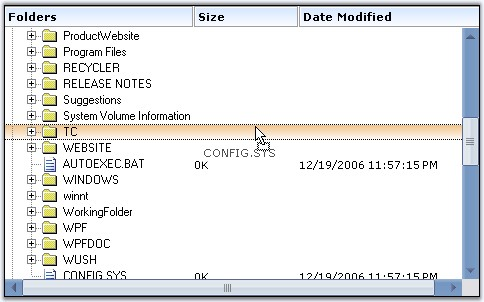

MultiColumnTreeView control also supports drag drop operation which lets you drag a complete row with multiple columns to the desired position.

Figure 1183: Drag Support Illustrated
This can be done similar to that of the treeview control. The only difference is that, in MultiColumnTreeView, we need to use the MultiColumnTreeView class instead of the TreeView class.
There are different selection modes for the nodes during drag drop. They are discussed in Node Selection topic.
See Also
Drag and Drop, Selection Settings While Drag Drop, Mouse and Keyboard Based Selection, Drag and Drop Events